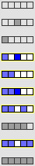
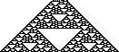

Click on the small CA pattern to see a larger portion in a new window.
| First, here are two examples of Outer Totalistic
CA with random initial conditions. |
|
|
| This Outer Totalistic CA has a small random scattering of
initially live cells. |
| From a single initial live cell, this CA produces a uniformly
dead pattern. |
| Notice on a scale larger than the initial scattering, the pattern appears to be a gasket. |
|
 |
 |
|
| Here are patterns grown from random initial conditions, for three non Outer Totalistic rules. |
|
|